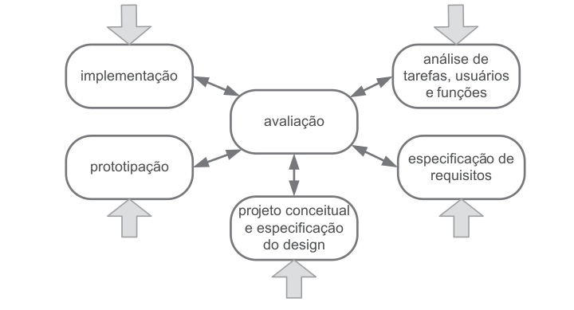
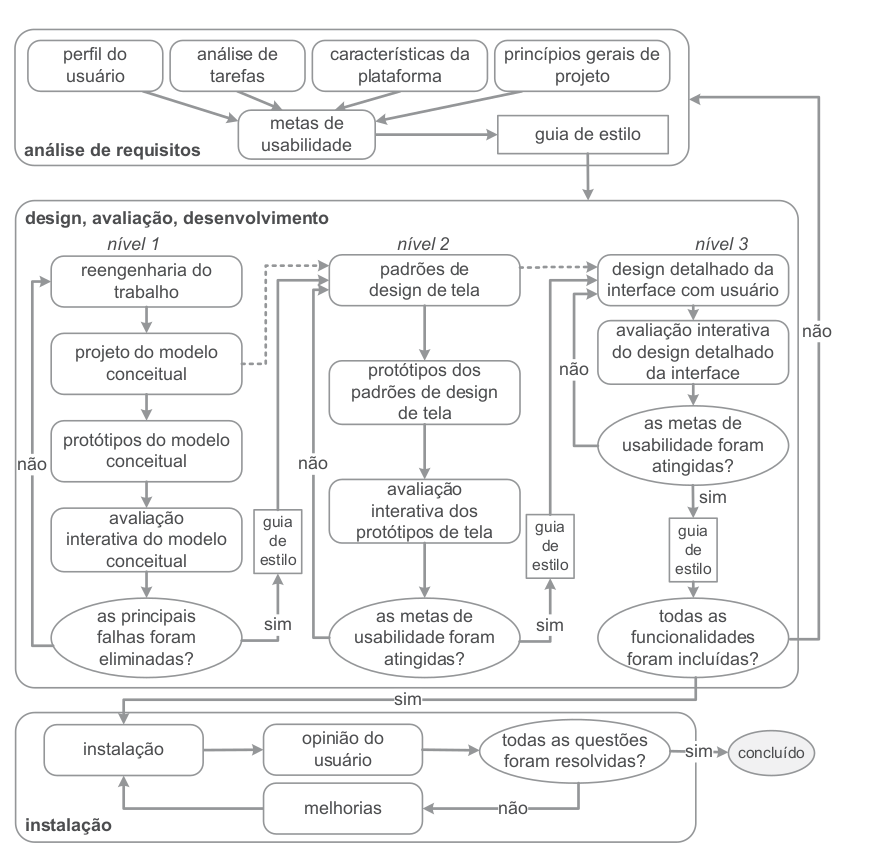

Processo de Design
Introdução
Sendo o design um processo envolto de 3 atividades básicas (Lawson, 2006; Lowgren e Stolterman, 2007):
-
a análise da situação atual: estudar e interpretar a situação atual;
-
a síntese de uma intervenção: planejar e executar uma intervenção na situação atual;
-
a avaliação da nova situação: verificar o efeito da intervenção, comparando a situação analisada anteriormente com a nova situação, atingida após a intervenção.
Os processos de design então, derivados dessas atividades básicas, propõe maneiras de realizar essas atividades e definem artefatos produzidos (e consumidos) em cada etapa proposta.
Processos de Design
Processo de Design Simples
O processo de design simples (figura 1) é uma abordagem para criar soluções de design de forma eficiente e direta, concentrando-se nos princípios fundamentais do design e na resolução de problemas de maneira clara e concisa.
Figura 1 - Processo de Design Simples Fonte: BARBOSA, S. D. J.; SILVA, B. S. Interação Humano-Computador. Rio de Janeiro: Elsevier, 2011.
Pontos positivos:
-
Eficiência: Um processo simplificado pode reduzir o tempo necessário para completar um projeto, pois elimina etapas desnecessárias ou complicadas.
-
Custo reduzido: Menos etapas e recursos podem resultar em custos mais baixos para a execução do projeto.
Pontos negativos:
-
Superficialidade: Um processo muito simples pode levar a uma análise superficial ou falta de consideração de aspectos importantes do design.
-
Menor criatividade: A simplificação excessiva pode restringir a criatividade da equipe, limitando as oportunidades de inovação e melhoria.
Ciclo de Vida em Estrela
O modelo de Ciclo de Vida Estrela (figura 2) foi proposto em 1989 por Hartson e Hix, a partir de um trabalho empírico que estes autores desenvolveram através da observação de como designers de interfaces trabalhava. O Modelo Estrela é composto por seis atividades, a saber: análise de tarefas, especificação de requisitos, projeto conceitual e formal, prototipação, implementação e avaliação
Figura 2 - Ciclo de Vida em Estrela

Fonte: BARBOSA, S. D. J.; SILVA, B. S. Interação Humano-Computador. Rio de Janeiro: Elsevier, 2011.
Pontos positivos:
-
Estrutura clara: O modelo em estrela fornece uma estrutura clara e bem definida para o desenvolvimento de software, dividindo o processo em fases distintas, como análise, design, implementação e testes.
-
Facilidade de treinamento da equipe: O modelo em estrela é relativamente simples e fácil de entender, o que pode facilitar o treinamento da equipe e a integração de novos membros à equipe de desenvolvimento.
Pontos negativos:
-
Inadequado para projetos de grande escala ou complexidade: O modelo em estrela pode não ser adequado para projetos de grande escala ou complexidade, nos quais os requisitos são frequentemente voláteis e o feedback do cliente é essencial ao longo do processo de desenvolvimento.
-
Rigidez: O modelo em estrela é linear e sequencial, o que pode torná-lo inflexível para lidar com mudanças de requisitos ou necessidades do cliente durante o desenvolvimento. Isso pode levar a atrasos significativos ou custos adicionais se mudanças forem necessárias após o início da implementação.
Engenharia de Usabilidade de Nielsen
Trata a usabilidade como um processo interativo que envolve o usuário em suas fases e onde cada fase gera um artefato. Deve se notas que esse processo é Centrado no Usuário.
Pontos positivos:
-
Foco no usuário: A Engenharia de Usabilidade coloca o usuário no centro do processo de design, garantindo que os produtos atendam às suas necessidades e expectativas.
-
Melhoria contínua: A abordagem de Nielsen enfatiza a importância da iteração e melhoria contínua, permitindo que os produtos evoluam para atender às mudanças nas necessidades e preferências dos usuários.
Pontos negativos:
-
Complexidade e custo: Alguns dos métodos de Engenharia de Usabilidade podem ser complexos e exigir recursos significativos, como tempo, pessoal e equipamento especializado, o que pode ser um obstáculo para algumas organizações.
-
Simplicidade excessiva e falta de descrição: A abordagem de Nielsen pode ser criticada por ser muito simplista, oferecendo diretrizes gerais sem detalhamento específico sobre sua aplicação em contextos variados. Isso pode deixar os designers sem orientação clara sobre como implementar as diretrizes e lidar com situações complexas
Engenharia de Usabilidade de Mayhew
A Engenharia de Usabilidade de Mayhew (figura 3) traz uma abordagem que privilegia o papel do usuário na execução de tarefas, no intuito de construir sistemas adaptados às suas necessidades e objetivos.
Figura 3 - Engenharia de Usabilidade de Mayhew

Fonte: BARBOSA, S. D. J.; SILVA, B. S. Interação Humano-Computador. Rio de Janeiro: Elsevier, 2011.
Pontos positivos:
-
Interatividade nas fases: O processo é altamente iterativo, o que significa que permite revisões e refinamentos contínuos ao longo do desenvolvimento, garantindo que o produto final seja ajustado de acordo com as necessidades e feedback dos usuários.
-
Aumento da Aceitação do Usuário: Sistemas que são projetados com base nos princípios da Engenharia de Usabilidade têm uma maior probabilidade de serem aceitos pelos usuários, o que pode ajudar a promover a adoção e o uso contínuo do sistema.
Pontos negativos:
-
Processo mais complexo: Devido ao seu alto detalhamento e ênfase na metodologia, a Engenharia de Usabilidade de Mayhew pode ser percebida como mais complexa, o que pode exigir mais tempo e esforço para compreender completamente o processo e suas nuances.
-
Tempo e Recursos: A abordagem pode exigir um investimento significativo de tempo e recursos, especialmente em projetos onde os prazos são apertados ou os recursos são limitados. Isso pode tornar o processo menos adequado para projetos que demandam rapidez ou têm restrições financeiras.
Processo de design definido para o projeto
Foram discutido entre os membros e o processo de design definido pela equipe para ser usado no projeto foi o Ciclo de Vida de Mayehw, por ser um modelo mais completo e detalhado, o que reduz a subjetividade comum em modelos de processo de design mais simples e possibilitando designers menos experientes aplicá-los com êxito em projetos complexos.
Bibliografia
BARBOSA, S. D. J.; SILVA, B. S. Interação Humano-Computador. Rio de Janeiro: Elsevier, 2011.
Histórico de Versões
| Versão | Data | Descrição | Autor(es) | Revisor(es) |
|---|---|---|---|---|
| 1.0 | 04/04/2024 | Introdução e processos de design | Renan Araújo | Yasmim Rosa |
| 1.2 | 04/04/2024 | Ajuste em fontes e legendas | Yasmim Rosa |